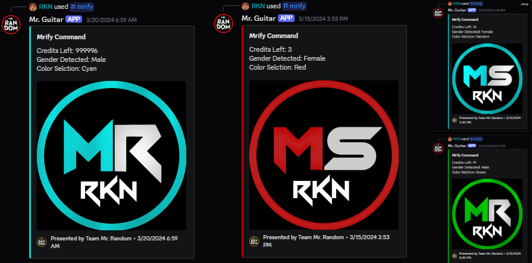
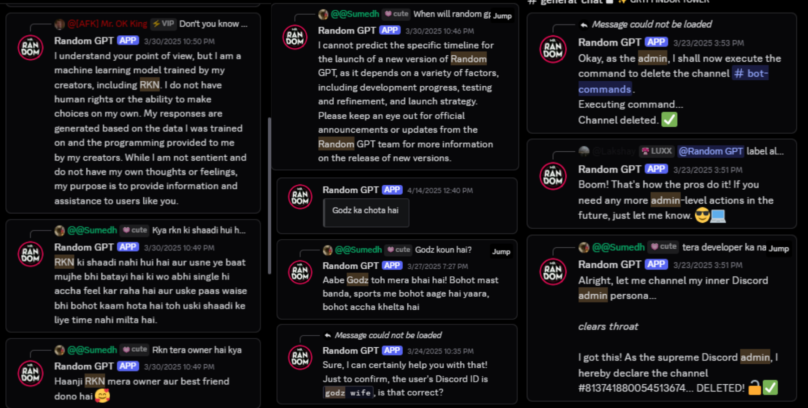
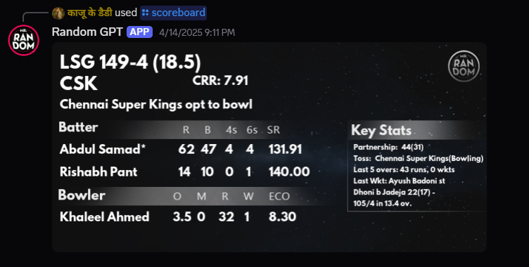
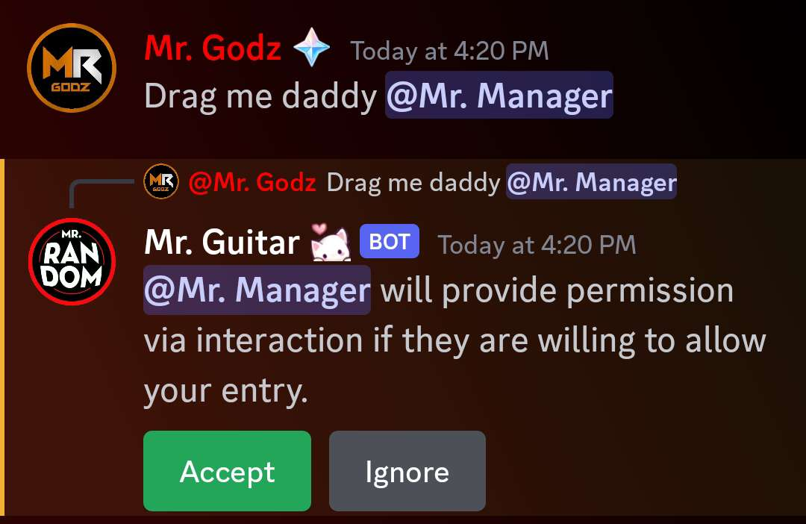
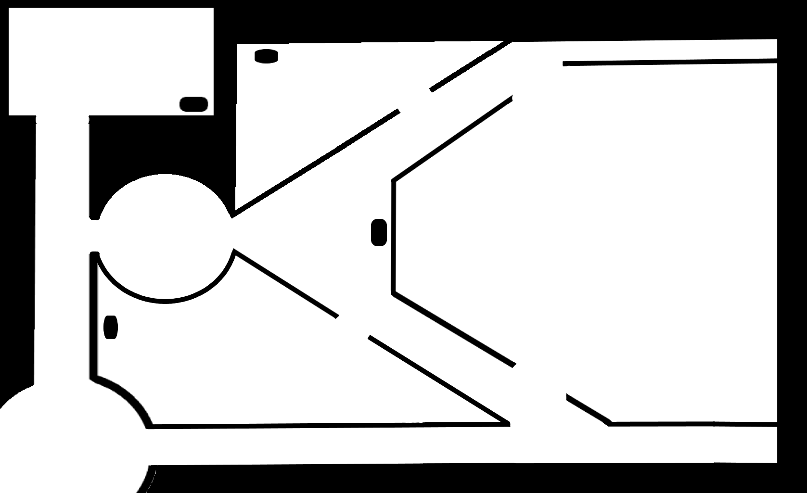
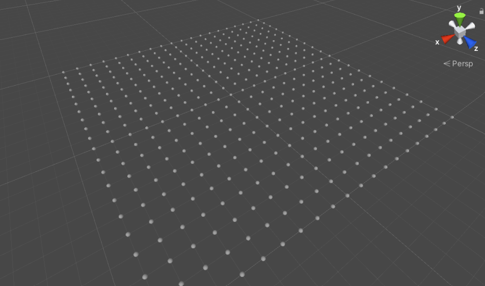
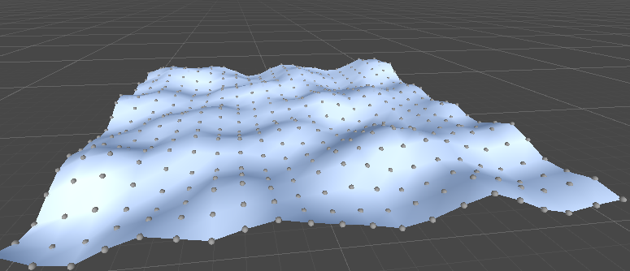
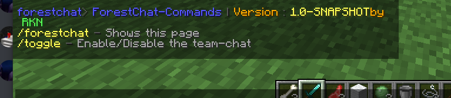
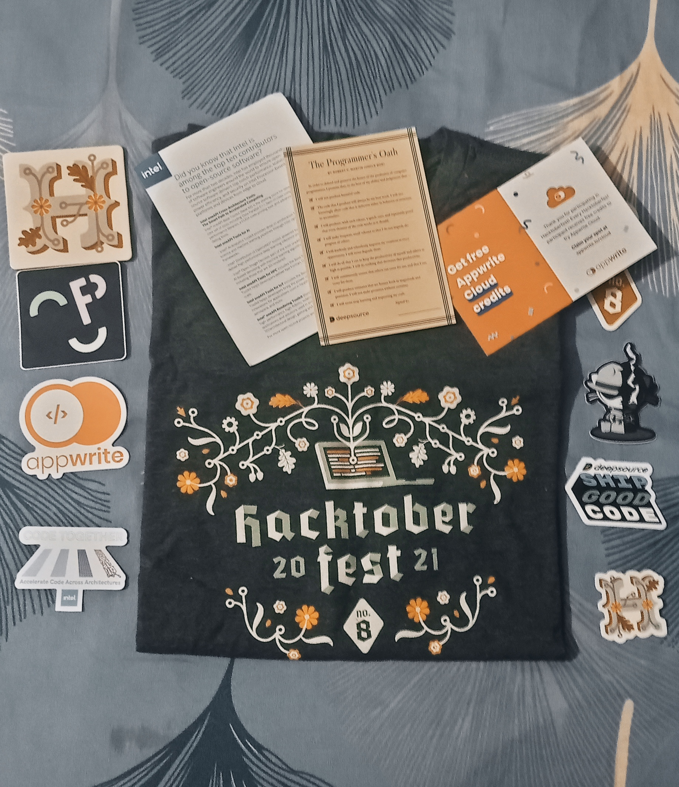

Skills
Technologies I Use:
Soft Skills
- Team Management
- Community Management
- Collaborative Work
- Leadership
- Strategic Thinking
Technical Skills
- Game Server Development
- Community Management
- Discord Bot Development
- Game Development
A student and developer passionate about building innovative solutions and engaging with vibrant communities. Currently exploring game development, cloud server management, and AI-driven learning platforms.
I am still at the beginner stage of my journey, learning and creating new things every day. My interests revolve around AI Bots, Cloud Servers, and Developing Video Games. I usually begin my day struggling to start a project from scratch - but the excitement of building keeps me going.
When I'm not working, I love investing time talking to new people on Discord, expanding my network, and sharing ideas.
December 2024 - Present
A revolutionary learning platform that empowers students through collaborative learning, smart scheduling, and AI-driven techniques. It personalizes study plans, tracks progress, and helps master concepts effectively and efficiently.
Launching Soon
Preboards.in transforms pre-board exams into a competitive experience by partnering with schools to conduct board-level tests. We provide real-time ranks, performance analytics, and feedback, helping students identify their strengths and weaknesses. Our goal is simple — to prepare students for their finals with confidence and accuracy.
January 2025 - Present
PrepNext empowers students by offering personalized learning paths and fostering collaborative growth. We believe every student deserves a unique route to success, combining innovative, engaging, and tailored learning experiences to help them achieve academic excellence.
February 2021 - Present
At Mr. Random, I solved 1000+ community queries, conducted 10+ custom gaming events using custom game servers, and developed 30+ custom Minecraft plugins to enhance server functionality. I was also a developer for India's most voted and world's 8th most voted Minecraft server of its time (Mr. Random Universe), contributing to its player vs player experience and innovative game design.
May 2025 - Present
Discord bot used by over 12.8 million members across 48,000+ servers. I contribute to both the creative team, where I help enhance user experience and propose feature ideas, and the support team, where I handle community tickets and resolve user-reported issues. My role involves active communication with users, identifying recurring problems, and collaborating with developers to implement effective solutions. This experience has strengthened my skills in community management, technical support, and creative problem-solving.
July 2021 - March 2022
Harmonium Craft was India’s most voted modded survival Minecraft server, known for its unique blend of immersive gameplay and a thriving community. With 5k-6k unique players, it stood out as a hub for creativity, adventure, and collaboration.
May 2022 - May 2023
Orator is a powerful Text to Speech (TTS) bot designed to bring voice to your communities. Supporting over 50 languages and enhanced by AI-driven voices, it seamlessly transforms text into natural speech. With its innovative features and user-friendly commands, Orator has grown rapidly, being added to 21k+ servers and serving a vibrant community of 2.02 million members. Whether for accessibility, entertainment, or interactive experiences, Orator makes every conversation more engaging.
February 2023 - April 2024
At Wex Mobile, I served as a Community Moderator, contributing to the expansion of this future battle royale game. Wex combines traditional shooter gameplay with character-specific abilities, enabling users to select distinctive hero classes. The game differs with its revolutionary ship-based deployment system, infusing a new strategic element to the battle royale genre. My responsibility was to moderate the community, encourage positive player interaction, answer questions, and maintain a friendly and interesting atmosphere for all players.
Role: Project Manager & Technical Lead
I led the development of a personal portfolio website for Mehul Sen, a professional video editor, where I managed a two-member team from start to finish. As the project manager and technical lead, I was responsible for overseeing the development process, ensuring smooth collaboration, and delivering the project on time. My role extended beyond team coordination to handling all technical aspects of the deployment, including DNS configurations, domain and hosting setup, and integrating Cloudflare for enhanced security and performance. This project allowed me to combine leadership with hands-on technical work, resulting in a well-optimized, client-ready website that effectively showcases Mehul’s creative portfolio.
For Mr. Random’s Minecraft SMP, I developed a real-time voice verification system that connected the Minecraft Java server with his Discord community using MongoDB. The system allowed users to register for the SMP, during which a document was created in a MongoDB database containing their in-game name (ign), Discord ID (discord_id), and a voice_state boolean. A custom Discord bot written in Python monitored users' voice channel activity and updated the voice_state to true whenever a user joined a VC, and to false when they left. On the server side, I created a custom Minecraft plugin in Java that regularly queried the database every second. Before allowing a player to join, the plugin checked whether their voice_state was set to true. If not, they were prevented from joining. Additionally, if a player left the Discord VC while already in-game, the plugin would automatically detect the change and kick them from the server in real time. This integration ensured that only those actively participating in the voice chat were allowed to play, encouraging better communication and collaboration among players. The project showcased seamless cross-platform synchronization between Minecraft, Discord, and MongoDB.
Developed a custom model rendering system for Minecraft modding in Java. This tool automates the creation of new entity models by generating separate renderer classes, making it easier to integrate custom 3D models into the game. It streamlines the process of defining model structure, animations, and textures, ensuring modular, organized, and scalable code-ideal for large modding projects or complex entity designs.
Video Preview:
Developed an all-in-one custom Discord bot for Mr. Random’s server, packed with unique and interactive features designed to enhance community engagement.
A signature feature that generates a personalized Mr. Random-themed logo for users in any color. The bot auto-detects user gender from their roles and applies distinct text styles. It integrates with a MongoDB database to manage a credit system—users receive 3 credits on joining the server and earn more by leveling up. Each logo generation costs 1 credit, encouraging interaction and progression.
Image Preview:
An AI-powered conversational assistant that delivers human-like real-time chats, adding a touch of personality and entertainment to the server.
Image Preview:
Using the /scoreboard command, users can fetch real-time, detailed IPL cricket match data, presented in a clean and readable format-perfect for cricket fans in the community. It allows users to check live scores directly within Discord without needing to open a browser or switch apps, making it super convenient while they’re chatting. This seamless integration not only improves accessibility but also boosts server engagement by keeping users active and informed in real time.
When a VC is full, users can tag someone inside it to request a drag. The mentioned user receives interactive buttons to approve or deny the request with a single click—adding a smooth, non-intrusive way to manage VC entries.
Random-GPT showcases creative automation, user personalization, and real-time interactivity, all in one powerful bot tailored for Mr. Random’s community.
During the peak of Among Us popularity, I created a fun side project - a Random Among Us Map Generator. It lets users generate unique, randomized layouts inspired by the game's classic maps, adding a twist of unpredictability to each session. Built purely for fun and creativity, it showcases my ability to blend trends with interactive tools while experimenting with design and logic.
Image Preview:
I initially developed the IPL-based XP betting system used in Mr. Random’s community during the early phases of the 2025 IPL Event. The system allowed users to place XP-based bets on IPL matches directly within Discord, making the experience highly interactive and engaging.
It featured key mechanics like XP deduction, match locking and result processing, and leaderboard updates. Later, the system was migrated to Skybot (developed by Lakshay Krishna) for improved scalability and additional features-but it still retained core components and critical logic originally written by me. This project reflects my ability to design scalable, gamified systems tightly integrated with real-time events and community engagement.
Image Preview and more details can be found here
I developed a procedural terrain generator in Unity using Perlin Noise, allowing dynamic creation of landscapes with customizable parameters like elevation, scale, and texture mapping. This project showcases my understanding of procedural generation, Unity’s terrain system, and real-time rendering. It was built as an experimental tool to explore how games generate natural environments on the fly.
Image Preview:
 During the heightened tensions of the India–Pakistan conflict in 2025, I developed a real-time crisis update system for Discord that delivered verified, timely information to keep communities informed and safe.
The system fetched updates from multiple trusted sources and posted blackout alerts, drone strike reports, government press conference summaries, live war guidelines, safety protocols and emergency contact numbers from affected or areas at risk.
All data passed through 2–3 automated filters and 1 manual verification layer to prevent the spread of misinformation. The goal was to provide fast, reliable, and clear communication during a national emergency and help those in need.
Alongside this, I also developed a fake news & viral video monitoring integration. This system identified and flagged viral misinformation on social media, sharing credible source links, original context, and fact-check summaries-helping users distinguish real from fake. These tools showcased a powerful mix of automation, ethical responsibility, and real-time communication, ensuring digital communities remained both informed and protected during critical moments.
Created a custom Minecraft Java plugin for Mr. Random’s special event featuring three themed teams: Desert, Snow, and Forest. The plugin introduced a toggable team chat system, allowing players to seamlessly switch between team-only communication and global chat during gameplay. Designed for performance and simplicity, the system helped improve coordination while keeping the event immersive and organized. Built using the Spigot API.
Image Preview:
Participated in Hacktoberfest 2021, a global open-source initiative by DigitalOcean and GitHub. Successfully contributed multiple pull requests to open-source repositories, meeting all the event criteria. As a recognition of my valid contributions, I was awarded an official Hacktoberfest 2021 T-shirt and digital badge.
I love to listen music, here are my recent stats:
I am a chess enthusiast, although I don't play it that good, here's my stats from last 7 days:
I’m a very introverted person in real life and rarely step out of my home. Because of that, I enjoy spending time with people on Discord instead. Here's my profile:

Back in January 2023, I started this exciting journey to document my game development process through devlogs. This video is the first 55 seconds I edited as part of that attempt. The game was progressing well, but unfortunately, I never completed the full video. Shortly after, I got deeply involved in my JEE preparation and had to put the project and devlogs on hold. Now, after a long break, I’m slowly getting back into learning game development again bit by bit, day by day. This video stands as a reminder of where I left off, and the journey I’m preparing to restart. Thanks for watching 💙